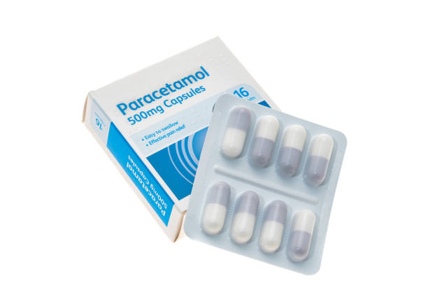
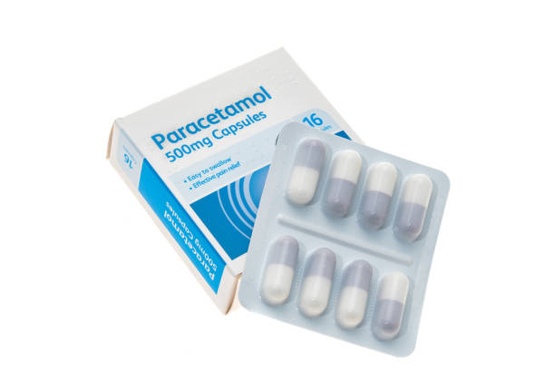

(1).png)
Welcome to our collection of premium health and wellness products! At our pharmacy, we are committed to offering a wide range of high-quality pharmaceuticals, supplements, and personal care items to meet your everyday needs. Whether you’re looking for trusted prescription medications, essential vitamins, each product is carefully selected to ensure the best for you and your family. With a focus on safety, reliability, and affordability, we aim to support your health journey with products you can trust. Explore our selection today and discover the perfect solutions for your well-being
 

Role: Analgesics, commonly known as painkillers, play a crucial role in managing and relieving pain in the body without causing a loss of consciousness. They work by blocking pain signals sent to the brain or by interfering with the brain's interpretation of these signals, making them essential for treating both acute and chronic pain.

Role: Antibiotics are used to treat bacterial infections by killing or inhibiting the growth of bacteria. Antibiotics are effective against bacterial infections like strep throat, urinary tract infections, and certain respiratory infections. They don’t work against viruses, so they’re ineffective for illnesses like the common cold or flu.Antibiotics are powerful medications used to treat bacterial infections by killing or inhibiting the growth of bacteria. Discovered in the early 20th century, they have revolutionalised medicine, saving countless lives from infections that were once fatal. Antibiotics work by targeting specific bacterial functions, such as cell wall synthesis or protein production, without harming human cells.

Role: These medications are used to manage high blood pressure (hypertension). Hypertension is a significant risk factor for serious health complications, including heart disease, stroke, and kidney damage. These medications to lower blood pressure, improve cardivascular health, and prevent complications. The choice of antihypertensives depends on factors like the patients overall health, the severity of hypertension, and any existing medical conditions

Role: Antihistamines are used to treat allergic reactions by blocking histamine, a substance produced by the body during an allergic reaction. By inhibiting histamines action, these drugs help relieve symptoms such as itching, sneezing, runny nose, and hives. There are two main types: first-generation antihastimines, which are less sedating and often preferred for long-term use. Antihistamines are commonly used to treat allergies, hay fever, and certain cold symptom

Role: Antidepressants are used to treat depression, anxiety, and some other mood disorders. Antidrepressants are medications designed to alleviate symptoms of depression by adjusting the balance of chemicals in the brain called neurotransmitters. There are several types, including SSRIs(selective serotonin-norepinephrine reuptake inhibitors), and tricylic antidepressants. These medications not only help improve mood but also can aid in alleviating anxiety and other related conditions. Its important to note that antidepressants usually take several weeks to start working and may come with side effects. Always consult with a healthcare provider before starting or stopping any medication.

.jpg)
Role: These medications are used to manage diabetes by controlling blood sugar levels. They can be categorized into several classes, including insulin, which helps cells absorb glucose, and oral agents like metformin, sulfonylureas, and DPP-4 inhibitors, which improve insulin production. The choice of antidiabetic therapy depends on the type of diabetes, the patients health status, and individual response to treatment. Proper management with these medications is crucial to prevent complications associated with diabetes.